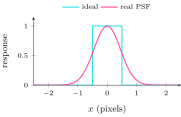

Definition
The DN of band  at pixel is, up to calibration,
at pixel is, up to calibration,
. Ideal integration would use rectangles; real ones are bell-shaped with tails. The Fourier transform of the PSF is the modulation transfer function (MTF): how much contrast survives at each spatial frequency.
Picture

The real response reaches into the neighbouring pixels.
Worked example
A Gaussian PSF with pixel has full width at half maximum pixel. Its MTF at the Nyquist frequency cycles/pixel is : patterns at the finest resolvable scale keep 42% of their contrast.
Intuition
Every pixel is a little blurred mixture of its neighbours, and every band a little mixture of nearby colours.
Pitfall
Small bright objects (a road, a boat) can be detected even if narrower than a pixel, while two objects one pixel apart may not be separated: detectability and resolution are different things.